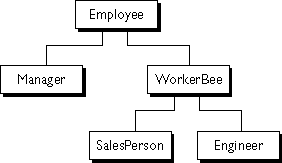
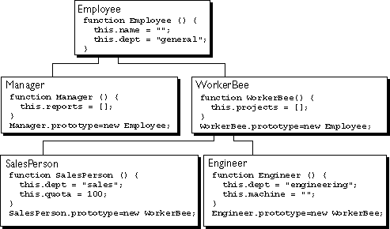
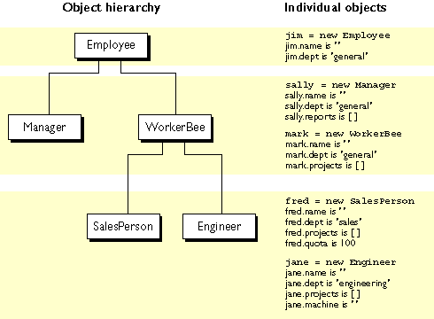
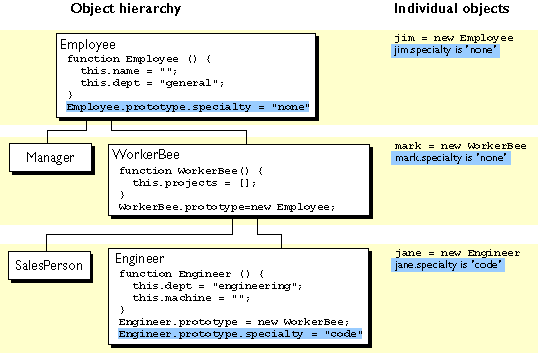
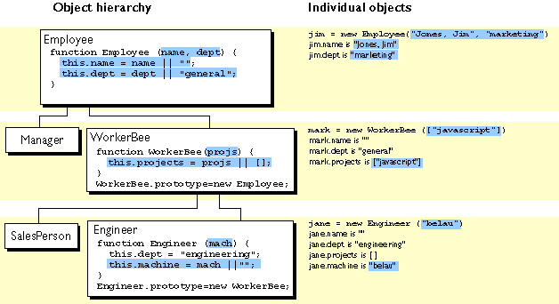
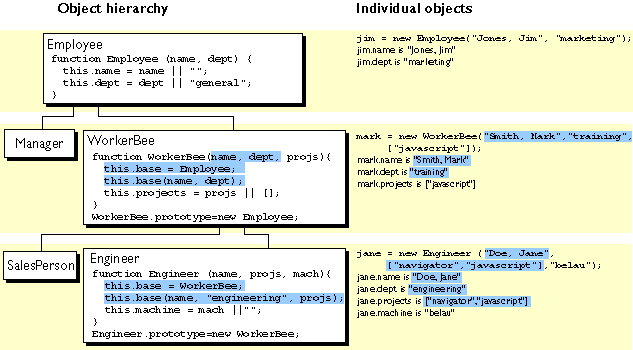

| Previous Contents Index Next |
| Core JavaScript Guide 1.5 |
Chapter 8 Details of the Object Model
JavaScript is an object-based language based on prototypes, rather than being class-based. Because of this different basis, it can be less apparent how JavaScript allows you to create hierarchies of objects and to have inheritance of properties and their values. This chapter attempts to clarify the situation.This chapter assumes that you are already somewhat familiar with JavaScript and that you have used JavaScript functions to create simple objects.
This chapter contains the following sections:
- Class-Based vs. Prototype-Based Languages
- The Employee Example
- Creating the Hierarchy
- Object Properties
- More Flexible Constructors
- Property Inheritance Revisited
Class-Based vs. Prototype-Based Languages
Class-based object-oriented languages, such as Java and C++, are founded on the concept of two distinct entities: classes and instances.A prototype-based language, such as JavaScript, does not make this distinction: it simply has objects. A prototype-based language has the notion of a prototypical object, an object used as a template from which to get the initial properties for a new object. Any object can specify its own properties, either when you create it or at run time. In addition, any object can be associated as the prototype for another object, allowing the second object to share the first object's properties.
- A class defines all of the properties (considering methods and fields in Java, or members in C++, to be properties) that characterize a certain set of objects. A class is an abstract thing, rather than any particular member of the set of objects it describes. For example, the Employee class could represent the set of all employees.
- An instance, on the other hand, is the instantiation of a class; that is, one of its members. For example, Victoria could be an instance of the Employee class, representing a particular individual as an employee. An instance has exactly the properties of its parent class (no more, no less).
Defining a Class
In class-based languages, you define a class in a separate class definition. In that definition you can specify special methods, called constructors, to create instances of the class. A constructor method can specify initial values for the instance's properties and perform other processing appropriate at creation time. You use the new operator in association with the constructor method to create class instances.JavaScript follows a similar model, but does not have a class definition separate from the constructor. Instead, you define a constructor function to create objects with a particular initial set of properties and values. Any JavaScript function can be used as a constructor. You use the new operator with a constructor function to create a new object.
Subclasses and Inheritance
In a class-based language, you create a hierarchy of classes through the class definitions. In a class definition, you can specify that the new class is a subclass of an already existing class. The subclass inherits all the properties of the superclass and additionally can add new properties or modify the inherited ones. For example, assume the Employee class includes only the name and dept properties, and Manager is a subclass of Employee that adds the reports property. In this case, an instance of the Manager class would have all three properties: name, dept, and reports.JavaScript implements inheritance by allowing you to associate a prototypical object with any constructor function. So, you can create exactly the Employee- Manager example, but you use slightly different terminology. First you define the Employee constructor function, specifying the name and dept properties. Next, you define the Manager constructor function, specifying the reports property. Finally, you assign a new Employee object as the prototype for the Manager constructor function. Then, when you create a new Manager, it inherits the name and dept properties from the Employee object.
Adding and Removing Properties
In class-based languages, you typically create a class at compile time and then you instantiate instances of the class either at compile time or at run time. You cannot change the number or the type of properties of a class after you define the class. In JavaScript, however, at run time you can add or remove properties from any object. If you add a property to an object that is used as the prototype for a set of objects, the objects for which it is the prototype also get the new property.
Summary of Differences
The following table gives a short summary of some of these differences. The rest of this chapter describes the details of using JavaScript constructors and prototypes to create an object hierarchy and compares this to how you would do it in Java.Table 8.1 Comparison of class-based (Java) and prototype-based (JavaScript) object systems
The remainder of this chapter uses the employee hierarchy shown in the following figure.Figure 8.1 A simple object hierarchy 
This example uses the following objects:
- Employee has the properties name (whose value defaults to the empty string) and dept (whose value defaults to "general").
- Manager is based on Employee. It adds the reports property (whose value defaults to an empty array, intended to have an array of Employee objects as its value).
- WorkerBee is also based on Employee. It adds the projects property (whose value defaults to an empty array, intended to have an array of strings as its value).
- SalesPerson is based on WorkerBee. It adds the quota property (whose value defaults to 100). It also overrides the dept property with the value "sales", indicating that all salespersons are in the same department.
- Engineer is based on WorkerBee. It adds the machine property (whose value defaults to the empty string) and also overrides the dept property with the value "engineering".
Creating the Hierarchy
There are several ways to define appropriate constructor functions to implement the Employee hierarchy. How you choose to define them depends largely on what you want to be able to do in your application.This section shows how to use very simple (and comparatively inflexible) definitions to demonstrate how to get the inheritance to work. In these definitions, you cannot specify any property values when you create an object. The newly-created object simply gets the default values, which you can change at a later time. Figure 8.2 illustrates the hierarchy with these simple definitions.
In a real application, you would probably define constructors that allow you to provide property values at object creation time (see More Flexible Constructors for information). For now, these simple definitions demonstrate how the inheritance occurs.
Figure 8.2 The Employee object definitions 
The following Java and JavaScript Employee definitions are similar. The only differences are that you need to specify the type for each property in Java but not in JavaScript, and you need to create an explicit constructor method for the Java class.
The Manager and WorkerBee definitions show the difference in how to specify the next object higher in the inheritance chain. In JavaScript, you add a prototypical instance as the value of the prototype property of the constructor function. You can do so at any time after you define the constructor. In Java, you specify the superclass within the class definition. You cannot change the superclass outside the class definition.
The Engineer and SalesPerson definitions create objects that descend from WorkerBee and hence from Employee. An object of these types has properties of all the objects above it in the chain. In addition, these definitions override the inherited value of the dept property with new values specific to these objects.
Using these definitions, you can create instances of these objects that get the default values for their properties. Figure 8.3 illustrates using these JavaScript definitions to create new objects and shows the property values for the new objects.
Note The term instance has a specific technical meaning in class-based languages. In these languages, an instance is an individual member of a class and is fundamentally different from a class. In JavaScript, "instance" does not have this technical meaning because JavaScript does not have this difference between classes and instances. However, in talking about JavaScript, "instance" can be used informally to mean an object created using a particular constructor function. So, in this example, you could informally say that jane is an instance of Engineer. Similarly, although the terms parent, child, ancestor, and descendant do not have formal meanings in JavaScript; you can use them informally to refer to objects higher or lower in the prototype chain.
Figure 8.3 Creating objects with simple definitions 
This section discusses how objects inherit properties from other objects in the prototype chain and what happens when you add a property at run time.
Inheriting Properties
Suppose you create the mark object as a WorkerBee as shown in Figure 8.3 with the following statement:When JavaScript sees the new operator, it creates a new generic object and passes this new object as the value of the this keyword to the WorkerBee constructor function. The constructor function explicitly sets the value of the projects property. It also sets the value of the internal __proto__ property to the value of WorkerBee.prototype. (That property name has two underscore characters at the front and two at the end.) The __proto__ property determines the prototype chain used to return property values. Once these properties are set, JavaScript returns the new object and the assignment statement sets the variable mark to that object.
This process does not explicitly put values in the mark object (local values) for the properties mark inherits from the prototype chain. When you ask for the value of a property, JavaScript first checks to see if the value exists in that object. If it does, that value is returned. If the value is not there locally, JavaScript checks the prototype chain (using the __proto__ property). If an object in the prototype chain has a value for the property, that value is returned. If no such property is found, JavaScript says the object does not have the property. In this way, the mark object has the following properties and values:
mark.name = "";
mark.dept = "general";
mark.projects = [];The mark object inherits values for the name and dept properties from the prototypical object in mark.__proto__. It is assigned a local value for the projects property by the WorkerBee constructor. This gives you inheritance of properties and their values in JavaScript. Some subtleties of this process are discussed in Property Inheritance Revisited.
Because these constructors do not let you supply instance-specific values, this information is generic. The property values are the default ones shared by all new objects created from WorkerBee. You can, of course, change the values of any of these properties. So, you could give specific information for mark as follows:
mark.name = "Doe, Mark";
mark.dept = "admin";
mark.projects = ["navigator"];
Adding Properties
In JavaScript, you can add properties to any object at run time. You are not constrained to use only the properties provided by the constructor function. To add a property that is specific to a single object, you assign a value to the object, as follows:Now, the mark object has a bonus property, but no other WorkerBee has this property.
If you add a new property to an object that is being used as the prototype for a constructor function, you add that property to all objects that inherit properties from the prototype. For example, you can add a specialty property to all employees with the following statement:
Employee.prototype.specialty = "none";
As soon as JavaScript executes this statement, the mark object also has the specialty property with the value of "none". The following figure shows the effect of adding this property to the Employee prototype and then overriding it for the Engineer prototype.
Figure 8.4 Adding properties 
The constructor functions shown so far do not let you specify property values when you create an instance. As with Java, you can provide arguments to constructors to initialize property values for instances. The following figure shows one way to do this.Figure 8.5 Specifying properties in a constructor, take 1 
The following table shows the Java and JavaScript definitions for these objects.
These JavaScript definitions use a special idiom for setting default values:
The JavaScript logical OR operator (||) evaluates its first argument. If that argument converts to true, the operator returns it. Otherwise, the operator returns the value of the second argument. Therefore, this line of code tests to see if name has a useful value for the name property. If it does, it sets this.name to that value. Otherwise, it sets this.name to the empty string. This chapter uses this idiom for brevity; however, it can be puzzling at first glance.
With these definitions, when you create an instance of an object, you can specify values for the locally defined properties. As shown in Figure 8.5, you can use the following statement to create a new Engineer:
jane.name == "";
jane.dept == "general";
jane.projects == [];
jane.machine == "belau"Notice that with these definitions, you cannot specify an initial value for an inherited property such as name. If you want to specify an initial value for inherited properties in JavaScript, you need to add more code to the constructor function.
So far, the constructor function has created a generic object and then specified local properties and values for the new object. You can have the constructor add more properties by directly calling the constructor function for an object higher in the prototype chain. The following figure shows these new definitions.
Figure 8.6 Specifying properties in a constructor, take 2 
Let's look at one of these definitions in detail. Here's the new definition for the Engineer constructor:
function Engineer (name, projs, mach) {
this.base = WorkerBee;
this.base(name, "engineering", projs);
this.machine = mach || "";
}Suppose you create a new Engineer object as follows:
jane = new Engineer("Doe, Jane", ["navigator", "javascript"], "belau");
JavaScript follows these steps:
You might think that, having called the WorkerBee constructor from inside the Engineer constructor, you have set up inheritance appropriately for Engineer objects. This is not the case. Calling the WorkerBee constructor ensures that an Engineer object starts out with the properties specified in all constructor functions that are called. However, if you later add properties to the Employee or WorkerBee prototypes, those properties are not inherited by the Engineer object. For example, assume you have the following statements:
- The new operator creates a generic object and sets its __proto__ property to Engineer.prototype.
- The new operator passes the new object to the Engineer constructor as the value of the this keyword.
- The constructor creates a new property called base for that object and assigns the value of the WorkerBee constructor to the base property. This makes the WorkerBee constructor a method of the Engineer object.
- The name of the base property is not special. You can use any legal property name; base is simply evocative of its purpose.
- The constructor calls the base method, passing as its arguments two of the arguments passed to the constructor ("Doe, Jane" and ["navigator", "javascript"]) and also the string "engineering". Explicitly using "engineering" in the constructor indicates that all Engineer objects have the same value for the inherited dept property, and this value overrides the value inherited from Employee.
- Because base is a method of Engineer, within the call to base, JavaScript binds the this keyword to the object created in Step 1. Thus, the WorkerBee function in turn passes the "Doe, Jane" and ["navigator", "javascript"] arguments to the Employee constructor function. Upon return from the Employee constructor function, the WorkerBee function uses the remaining argument to set the projects property.
- Upon return from the base method, the Engineer constructor initializes the object's machine property to "belau".
- Upon return from the constructor, JavaScript assigns the new object to the jane variable.
function Engineer (name, projs, mach) {
this.base = WorkerBee;
this.base(name, "engineering", projs);
this.machine = mach || "";
}
jane = new Engineer("Doe, Jane", ["navigator", "javascript"], "belau");
Employee.prototype.specialty = "none";The jane object does not inherit the specialty property. You still need to explicitly set up the prototype to ensure dynamic inheritance. Assume instead you have these statements:
function Engineer (name, projs, mach) {
this.base = WorkerBee;
this.base(name, "engineering", projs);
this.machine = mach || "";
}
Engineer.prototype = new WorkerBee;
jane = new Engineer("Doe, Jane", ["navigator", "javascript"], "belau");
Employee.prototype.specialty = "none";Now the value of the jane object's specialty property is "none".
Property Inheritance Revisited
The preceding sections described how JavaScript constructors and prototypes provide hierarchies and inheritance. This section discusses some subtleties that were not necessarily apparent in the earlier discussions.
Local versus Inherited Values
When you access an object property, JavaScript performs these steps, as described earlier in this chapter:The outcome of these steps depends on how you define things along the way. The original example had these definitions:
- Check to see if the value exists locally. If it does, return that value.
- If there is not a local value, check the prototype chain (using the __proto__ property).
- If an object in the prototype chain has a value for the specified property, return that value.
- If no such property is found, the object does not have the property.
function Employee () {
this.name = "";
this.dept = "general";
}function WorkerBee () {
this.projects = [];
}
WorkerBee.prototype = new Employee;With these definitions, suppose you create amy as an instance of WorkerBee with the following statement:
The amy object has one local property, projects. The values for the name and dept properties are not local to amy and so are gotten from the amy object's __proto__ property. Thus, amy has these property values:
amy.name == "";
amy.dept = "general";
amy.projects == [];Now suppose you change the value of the name property in the prototype associated with Employee:
Employee.prototype.name = "Unknown"
At first glance, you might expect that new value to propagate down to all the instances of Employee. However, it does not.
When you create any instance of the Employee object, that instance gets a local value for the name property (the empty string). This means that when you set the WorkerBee prototype by creating a new Employee object, WorkerBee.prototype has a local value for the name property. Therefore, when JavaScript looks up the name property of the amy object (an instance of WorkerBee), JavaScript finds the local value for that property in WorkerBee.prototype. It therefore does not look farther up the chain to Employee.prototype.
If you want to change the value of an object property at run time and have the new value be inherited by all descendants of the object, you cannot define the property in the object's constructor function. Instead, you add it to the constructor's associated prototype. For example, assume you change the preceding code to the following:
function Employee () {
this.dept = "general";
}
Employee.prototype.name = "";function WorkerBee () {
this.projects = [];
}
WorkerBee.prototype = new Employee;Employee.prototype.name = "Unknown";
In this case, the name property of amy becomes "Unknown".
As these examples show, if you want to have default values for object properties and you want to be able to change the default values at run time, you should set the properties in the constructor's prototype, not in the constructor function itself.
Determining Instance Relationships
You may want to know what objects are in the prototype chain for an object, so that you can tell from what objects this object inherits properties.Starting with JavaScript 1.4, JavaScript provides an instanceof operator to test the protoytpe chain. This operator works exactly like the instanceof function discussed below.
As discussed in Inheriting Properties, when you use the new operator with a constructor function to create a new object, JavaScript sets the __proto__ property of the new object to the value of the prototype property of the constructor function. You can use this to test the prototype chain.
For example, suppose you have the same set of definitions already shown, with the prototypes set appropriately. Create a __proto__ object as follows:
chris = new Engineer("Pigman, Chris", ["jsd"], "fiji");
With this object, the following statements are all true:
chris.__proto__ == Engineer.prototype;
chris.__proto__.__proto__ == WorkerBee.prototype;
chris.__proto__.__proto__.__proto__ == Employee.prototype;
chris.__proto__.__proto__.__proto__.__proto__ == Object.prototype;
chris.__proto__.__proto__.__proto__.__proto__.__proto__ == null;Given this, you could write an instanceOf function as follows:
function instanceOf(object, constructor) {
while (object != null) {
if (object == constructor.prototype)
return true;
object = object.__proto__;
}
return false;
}With this definition, the following expressions are all true:
instanceOf (chris, Engineer)
instanceOf (chris, WorkerBee)
instanceOf (chris, Employee)
instanceOf (chris, Object)But the following expression is false:
instanceOf (chris, SalesPerson)
Global Information in Constructors
When you create constructors, you need to be careful if you set global information in the constructor. For example, assume that you want a unique ID to be automatically assigned to each new employee. You could use the following definition for Employee:function Employee (name, dept) {
this.name = name || "";
this.dept = dept || "general";
this.id = idCounter++;
}With this definition, when you create a new Employee, the constructor assigns it the next ID in sequence and then increments the global ID counter. So, if your next statement is the following, victoria.id is 1 and harry.id is 2:
victoria = new Employee("Pigbert, Victoria", "pubs")
harry = new Employee("Tschopik, Harry", "sales")At first glance that seems fine. However, idCounter gets incremented every time an Employee object is created, for whatever purpose. If you create the entire Employee hierarchy shown in this chapter, the Employee constructor is called every time you set up a prototype. Suppose you have the following code:
function Employee (name, dept) {
this.name = name || "";
this.dept = dept || "general";
this.id = idCounter++;
}function Manager (name, dept, reports) {...}
Manager.prototype = new Employee;function WorkerBee (name, dept, projs) {...}
WorkerBee.prototype = new Employee;function Engineer (name, projs, mach) {...}
Engineer.prototype = new WorkerBee;function SalesPerson (name, projs, quota) {...}
SalesPerson.prototype = new WorkerBee;mac = new Engineer("Wood, Mac");
Further assume that the definitions omitted here have the base property and call the constructor above them in the prototype chain. In this case, by the time the mac object is created, mac.id is 5.
Depending on the application, it may or may not matter that the counter has been incremented these extra times. If you care about the exact value of this counter, one possible solution involves instead using the following constructor:
function Employee (name, dept) {
this.name = name || "";
this.dept = dept || "general";
if (name)
this.id = idCounter++;
}When you create an instance of Employee to use as a prototype, you do not supply arguments to the constructor. Using this definition of the constructor, when you do not supply arguments, the constructor does not assign a value to the id and does not update the counter. Therefore, for an Employee to get an assigned id, you must specify a name for the employee. In this example, mac.id would be 1.
No Multiple Inheritance
Some object-oriented languages allow multiple inheritance. That is, an object can inherit the properties and values from unrelated parent objects. JavaScript does not support multiple inheritance.Inheritance of property values occurs at run time by JavaScript searching the prototype chain of an object to find a value. Because an object has a single associated prototype, JavaScript cannot dynamically inherit from more than one prototype chain.
In JavaScript, you can have a constructor function call more than one other constructor function within it. This gives the illusion of multiple inheritance. For example, consider the following statements:
function Hobbyist (hobby) {
this.hobby = hobby || "scuba";
}function Engineer (name, projs, mach, hobby) {
this.base1 = WorkerBee;
this.base1(name, "engineering", projs);
this.base2 = Hobbyist;
this.base2(hobby);
this.machine = mach || "";
}
Engineer.prototype = new WorkerBee;dennis = new Engineer("Doe, Dennis", ["collabra"], "hugo")
Further assume that the definition of WorkerBee is as used earlier in this chapter. In this case, the dennis object has these properties:
dennis.name == "Doe, Dennis"
dennis.dept == "engineering"
dennis.projects == ["collabra"]
dennis.machine == "hugo"
dennis.hobby == "scuba"So dennis does get the hobby property from the Hobbyist constructor. However, assume you then add a property to the Hobbyist constructor's prototype:
Hobbyist.prototype.equipment = ["mask", "fins", "regulator", "bcd"]
Previous Contents Index Next
Copyright © 2000 Netscape Communications Corp. All rights reserved.Last Updated September 28, 2000